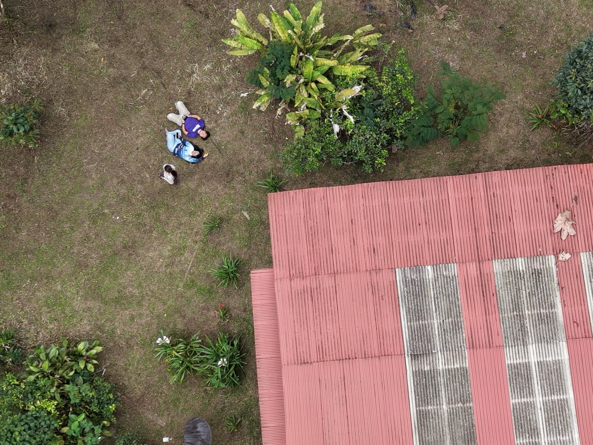
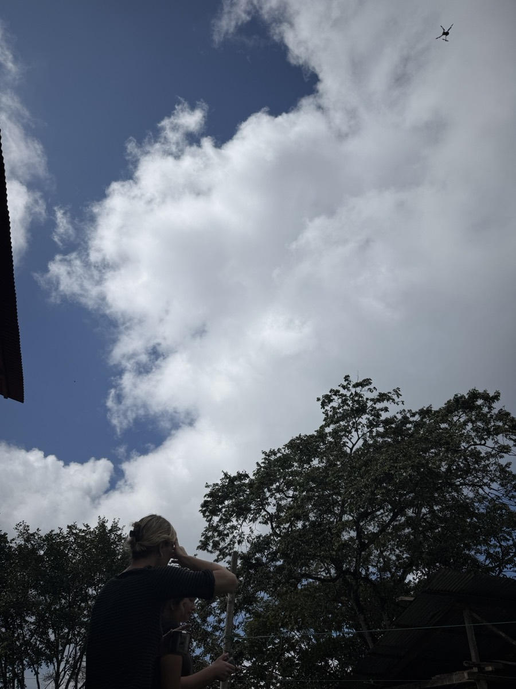
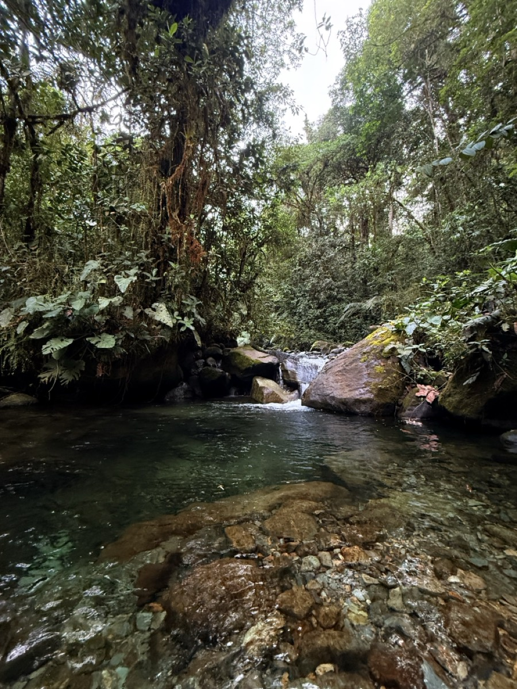
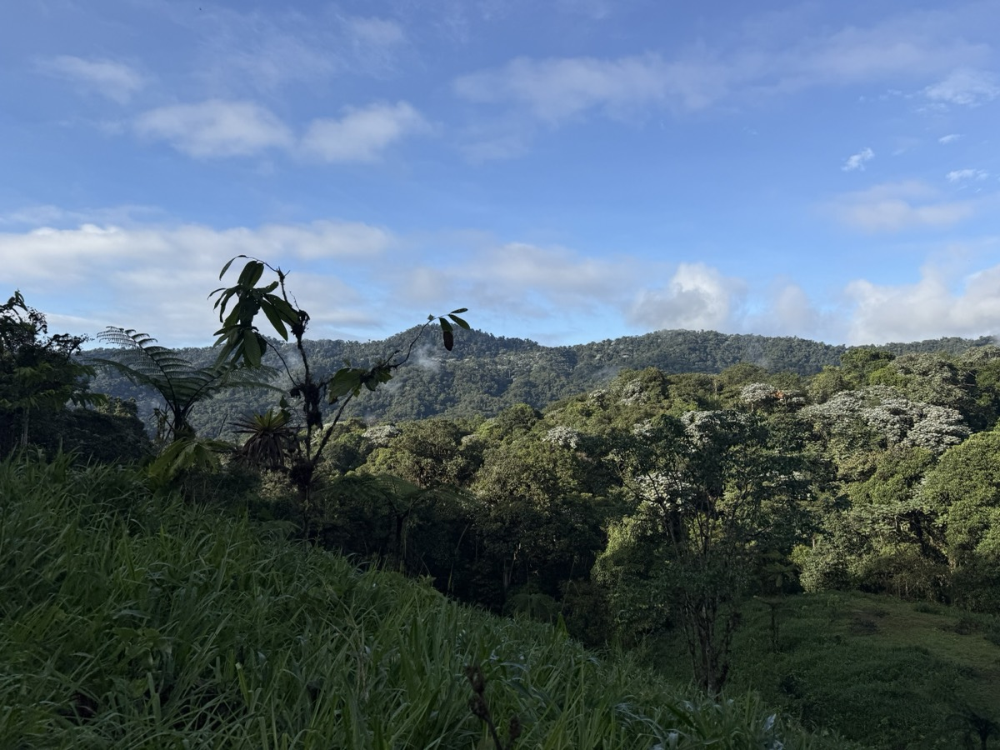
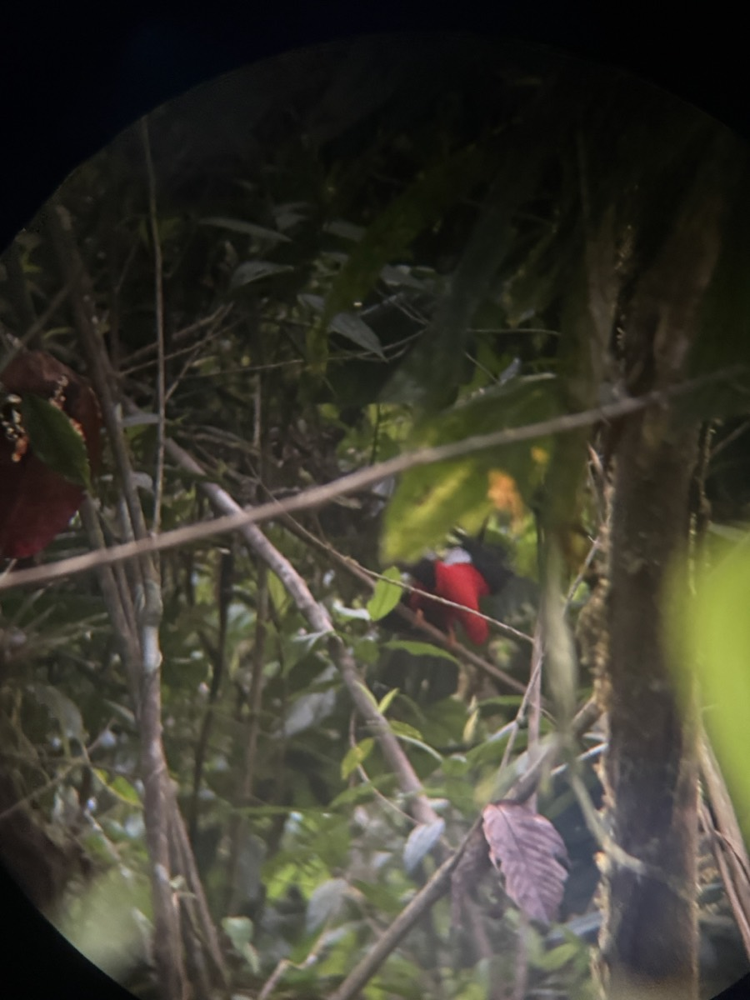
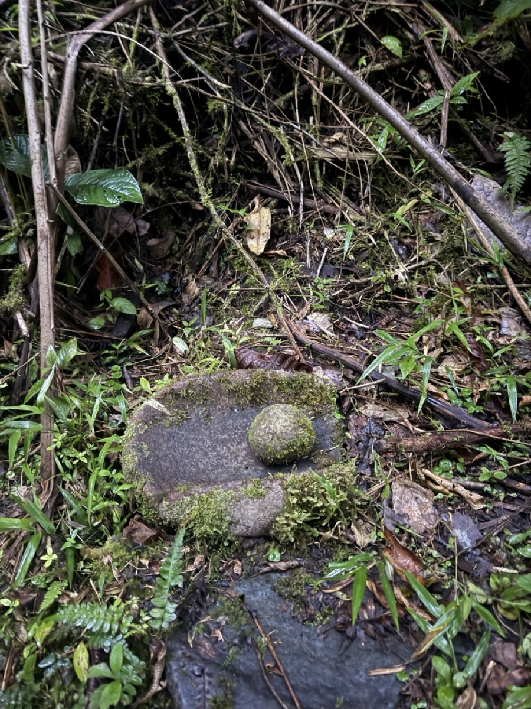
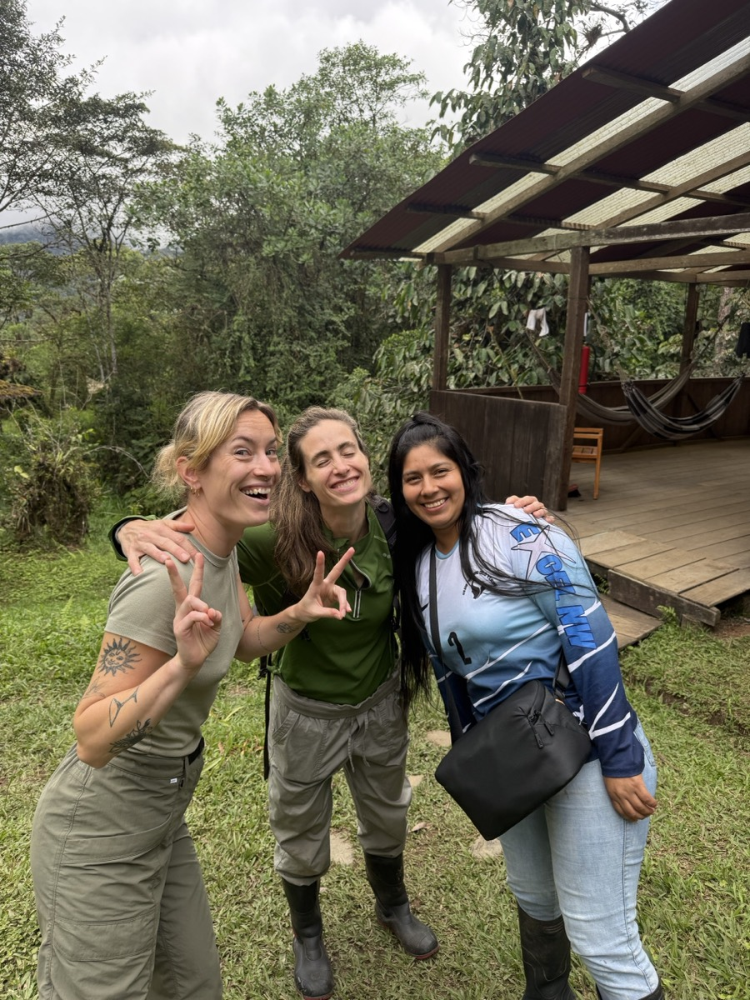
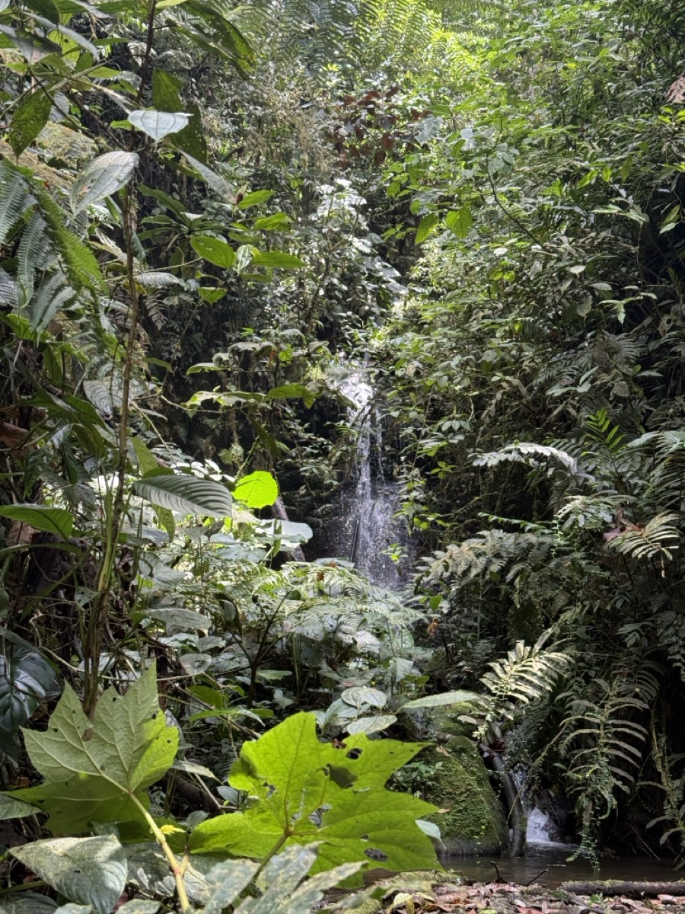

Mi Vista fue corta pero, si aprendí mucho
El bosque es una fuente de vida. Es donde los ríos pasan y dan vida a toda la comunidad de los Cedros y las comunidades cerca.
es lo que da vida a los miles especies de orquídeas. Vida a los miles aves que son nativos de esta tierra.
los Cedros has given me more than i ever could experience. I want to work in advocacy. i have always known that i could advocate for myself and now see that work can be continued is what motivates me to do more. I have been able to learn so much from Katie Surma, who is an amazing journalist, who is passionate about reporting stories. She has an ability to connect with people and stick true to the core values of journalism. staying true to the truth while understanding the danger that can come with it. She is asking the questions every citizen of the world should be asking one another. Getting to be a translator for her interviews, has allowed me to expand my conversational skills in spanish.
"los Cedros es vida", the biodiversity that thrives in this forest is a reminder of how important it is to protect our natural resources. this chance to connect with nature and see how intertwined the community is with the forest has been a humbling experience. I am grateful for the opportunity to learn and grow in such a unique environment. one of the projects i was able to collaborate on was the creation of a storytelling map about the forest and the surrounding community. this project allowed me to learn about the history and culture of the area, as well as the challenges faced by the local communities in protecting their natural resources. By talking with people from the communities, we understood their opinions on how they feel with the presence of mining / extraction companies.
Los Cedros prioritizes the community
they show up to town halls and actively share what projects they are working and how they want to share with those who are interested. Their integration of education programs with the partnerships of the local schools foster the engagement with the youth and inspires them to recognize the resources the forest offers.
My contributions to Los Cedros
besides all the laughs shared and help where i could. I was able to help structure the loscedrosfund.org website. We learned how to fly the drone and understand the different features. Created a 3D scan of the trees on the ridge line.
Additionally here are some of my friends' writing:
Ella's blog post
Katie's story on Amazon defenders declaring state of emergency

Photos from the field
-

flying the drone -

pozo de miel -

the canopy, at sunrise -

un gallo de la peña -

Artefacto de los Yumbos -

las amigas durante mi estadía -

una cascada